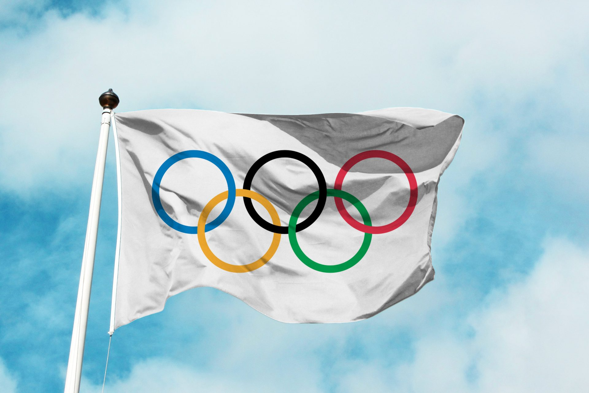

Olimpia története

Az olimpiai játékok több sportágat magába foglaló nemzetközi eseménysorozat az ókori olümpiai játékok mintájára. Az újkori olimpiai játékok sora – az ókori olümpiák mintájára, 1503 év elteltével – 1896-ban Athénban kezdődött el,[1] és minden olimpiád elején tartották meg. Az eseménysorozatot egészen 1920-ig csak nyáron rendezték meg. Az első téli olimpiát 1924-ben Franciaország Chamonix nevű városa szervezhette.[2] A nyári és a téli olimpiai játékokat 1992-ig egy éven belül rendezték,[3] 1994-től a nyári játékok az olimpiád első, a téli játékok pedig az olimpiád harmadik évében vannak.
További informáciok Olimpiákról